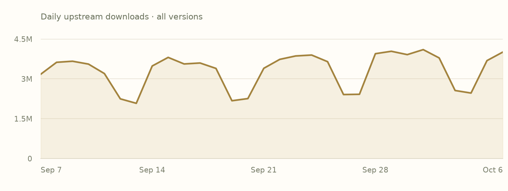
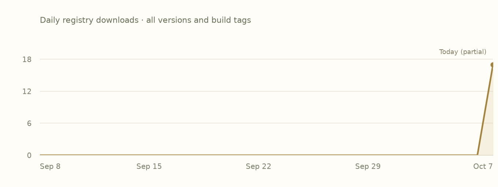

regex 1.13.1
An implementation of regular expressions for Rust. This implementation uses finite automata and guarantees linear time matching on all inputs.
Overview
crates-io/regexThis crate provides routines for searching strings for matches of a regular
expression (aka "regex"). The regex syntax supported by this crate is similar
to other regex engines, but it lacks several features that are not known how to
implement efficiently. This includes, but is not limited to, look-around and
backreferences. In exchange, all regex searches in this crate have worst case
O(m * n) time complexity, where m is proportional to the size of the regex
and n is proportional to the size of the string being searched.
This is the adopted Rust edition. Use the author’s README below for API documentation and examples.
Read the upstream READMEFeatures
Declared activationDefault state includes transitively enabled local features. Follow a feature name to its declaration.
Swipe horizontally to see all columns.
| Feature | Default | Enables |
|---|---|---|
default | Yesdefault | |
logging | No |
|
pattern | No | No additional feature or dependency edges declared. |
perf | Yesdefault → perf | |
perf-backtrack | Yesdefault → perf → perf-backtrack |
|
perf-cache | Yesdefault → perf → perf-cache | No additional feature or dependency edges declared. |
perf-dfa | Yesdefault → perf → perf-dfa |
|
perf-dfa-full | No |
|
perf-inline | Yesdefault → perf → perf-inline |
|
perf-literal | Yesdefault → perf → perf-literal |
|
perf-onepass | Yesdefault → perf → perf-onepass |
|
std | Yesdefault → std |
|
unicode | Yesdefault → unicode |
|
unicode-age | Yesdefault → unicode → unicode-age |
|
unicode-bool | Yesdefault → unicode → unicode-bool |
|
unicode-case | Yesdefault → unicode → unicode-case |
|
unicode-gencat | Yesdefault → unicode → unicode-gencat |
|
unicode-perl | Yesdefault → unicode → unicode-perl |
|
unicode-script | Yesdefault → unicode → unicode-script |
|
unicode-segment | Yesdefault → unicode → unicode-segment |
|
unstable | No | |
use_std | No |
Plain names enable local features. dependency/feature forwards a dependency feature; dependency?/feature forwards only if that dependency is already enabled. Empty edges do not imply no effect in source.
Dependencies
Manifest requirementsVersion requirements and activation conditions, as recorded. These are declarations, not a resolved project graph.
Swipe horizontally to see all columns.
| Package | Requirement | Kind | Activation |
|---|---|---|---|
crates-io/aho-corasickAlias: aho-corasick | ^1.0.0Default features: disabled | Optional | Enabled through default → perf → perf-literal |
crates-io/memchrAlias: memchr | ^2.6.0Default features: disabled | Optional | Enabled through default → perf → perf-literal |
crates-io/regex-automataAlias: regex-automata | ^0.4.16Default features: disabledRequests: alloc, meta, nfa-pikevm, syntax | Required | Required by the manifest |
crates-io/regex-syntaxAlias: regex-syntax | ^0.8.11Default features: disabled | Required | Required by the manifest |
Dependents
Preview coverageDeclared relationships within these six package pages. Conditional edges may depend on features or targets.
No matching dependency declarations in this six-package preview.
Indexed builds
Bound assetsEach row groups compiled units with the same target, toolchain, profile and feature selection. Missing builds do not mean upstream incompatibility.
Swipe horizontally to see all columns.
| Target | Toolchain | Profile | Features | Units |
|---|---|---|---|---|
aarch64-apple-darwin | rustc 1.98.0 (88d9e12ae 2026-08-18) | debug | default, perf, perf-backtrack, perf-cache, perf-dfa, perf-inline, perf-literal, perf-onepass, std, unicode, unicode-age, unicode-bool, unicode-case, unicode-gencat, unicode-perl, unicode-script, unicode-segment | 1 |
aarch64-apple-darwin | rustc 1.98.0 (88d9e12ae 2026-08-18) | release | default, perf, perf-backtrack, perf-cache, perf-dfa, perf-inline, perf-literal, perf-onepass, std, unicode, unicode-age, unicode-bool, unicode-case, unicode-gencat, unicode-perl, unicode-script, unicode-segment | 1 |
x86_64-unknown-linux-gnu | rustc 1.98.0 (88d9e12ae 2026-08-18) | debug | default, perf, perf-backtrack, perf-cache, perf-dfa, perf-inline, perf-literal, perf-onepass, std, unicode, unicode-age, unicode-bool, unicode-case, unicode-gencat, unicode-perl, unicode-script, unicode-segment | 1 |
x86_64-unknown-linux-gnu | rustc 1.98.0 (88d9e12ae 2026-08-18) | release | default, perf, perf-backtrack, perf-cache, perf-dfa, perf-inline, perf-literal, perf-onepass, std, unicode, unicode-age, unicode-bool, unicode-case, unicode-gencat, unicode-perl, unicode-script, unicode-segment | 1 |
Releases
Upstream & IncanUpstream release dates and recorded Incan availability. This preview displays the 1.13.1 manifest and builds; older entries link to their upstream records.
Swipe horizontally to see all columns.
| Version | Upstream released | Availability | Source |
|---|---|---|---|
1.13.1 | 2026-07-15 | Incan indexed | Upstream release |
1.13.0 | 2026-07-09 | Upstream only | Upstream release |
1.12.4 | 2026-06-09 | Upstream only | Upstream release |
1.12.3 | 2026-02-03 | Incan indexed | Upstream release |
1.12.2 | 2025-10-13 | Upstream only | Upstream release |
1.12.1 | 2025-10-11 | Upstream only | Upstream release |
1.11.3 | 2025-09-25 | Upstream only | Upstream release |
1.11.2 | 2025-08-24 | Upstream only | Upstream release |
Notes for 1.13.1
Author-provided, from the matching packaged changelog where available.
1.13.1 (2026-07-15)
This is a release that fixes a bug where incorrect regex match offsets could be reported. Note that this doesn't impact whether a match occurs or not, just where it occurs. The match offsets are still valid for slicing, they just may not refer to the correct leftmost-first match. See #1364 for (many) more details.
Bug fixes:
- #1354: Fixes previously unsound reverse suffix and inner optimizations.
Popularity
Snapshot · 2026-10-07Downloads are source-specific counts, not unique users or project installs. Both histories cover all versions.
crates.io downloads
30 complete UTC days
2026-09-07–2026-10-06 · crates.io data
View daily crates.io values
| UTC date | Downloads |
|---|---|
| 2026-09-07 | 3172971 |
| 2026-09-08 | 3624687 |
| 2026-09-09 | 3665151 |
| 2026-09-10 | 3557383 |
| 2026-09-11 | 3200240 |
| 2026-09-12 | 2247714 |
| 2026-09-13 | 2080047 |
| 2026-09-14 | 3486216 |
| 2026-09-15 | 3809538 |
| 2026-09-16 | 3562575 |
| 2026-09-17 | 3598339 |
| 2026-09-18 | 3394278 |
| 2026-09-19 | 2176763 |
| 2026-09-20 | 2258339 |
| 2026-09-21 | 3399184 |
| 2026-09-22 | 3735190 |
| 2026-09-23 | 3863860 |
| 2026-09-24 | 3898242 |
| 2026-09-25 | 3648187 |
| 2026-09-26 | 2410316 |
| 2026-09-27 | 2419652 |
| 2026-09-28 | 3949005 |
| 2026-09-29 | 4039922 |
| 2026-09-30 | 3913864 |
| 2026-10-01 | 4102115 |
| 2026-10-02 | 3789385 |
| 2026-10-03 | 2562661 |
| 2026-10-04 | 2466048 |
| 2026-10-05 | 3688192 |
| 2026-10-06 | 4011989 |
Incan registry downloads
GitHub Packages · all build tags
2026-09-08–2026-10-07 · 2026-10-07 is a partial UTC day · GitHub Packages data
View daily registry values
| UTC date | Downloads |
|---|---|
| 2026-09-08 | 0 |
| 2026-09-09 | 0 |
| 2026-09-10 | 0 |
| 2026-09-11 | 0 |
| 2026-09-12 | 0 |
| 2026-09-13 | 0 |
| 2026-09-14 | 0 |
| 2026-09-15 | 0 |
| 2026-09-16 | 0 |
| 2026-09-17 | 0 |
| 2026-09-18 | 0 |
| 2026-09-19 | 0 |
| 2026-09-20 | 0 |
| 2026-09-21 | 0 |
| 2026-09-22 | 0 |
| 2026-09-23 | 0 |
| 2026-09-24 | 0 |
| 2026-09-25 | 0 |
| 2026-09-26 | 0 |
| 2026-09-27 | 0 |
| 2026-09-28 | 0 |
| 2026-09-29 | 0 |
| 2026-09-30 | 0 |
| 2026-10-01 | 0 |
| 2026-10-02 | 0 |
| 2026-10-03 | 0 |
| 2026-10-04 | 0 |
| 2026-10-05 | 0 |
| 2026-10-06 | 0 |
| 2026-10-07 | 17 |
README
Author-providedFrom the checksum-verified upstream source archive. Cargo examples describe the upstream Rust library.
regex
This crate provides routines for searching strings for matches of a regular
expression (aka "regex"). The regex syntax supported by this crate is similar
to other regex engines, but it lacks several features that are not known how to
implement efficiently. This includes, but is not limited to, look-around and
backreferences. In exchange, all regex searches in this crate have worst case
O(m * n) time complexity, where m is proportional to the size of the regex
and n is proportional to the size of the string being searched.
Documentation
Module documentation with examples. The module documentation also includes a comprehensive description of the syntax supported.
Documentation with examples for the various matching functions and iterators
can be found on the
Regex type.
Usage
To bring this crate into your repository, either add regex to your
Cargo.toml, or run cargo add regex.
Here's a simple example that matches a date in YYYY-MM-DD format and prints the year, month and day:
use regex::Regex;
fn main() {
let re = Regex::new(r"(?x)
(?P<year>\d{4}) # the year
-
(?P<month>\d{2}) # the month
-
(?P<day>\d{2}) # the day
").unwrap();
let caps = re.captures("2010-03-14").unwrap();
assert_eq!("2010", &caps["year"]);
assert_eq!("03", &caps["month"]);
assert_eq!("14", &caps["day"]);
}
If you have lots of dates in text that you'd like to iterate over, then it's easy to adapt the above example with an iterator:
use regex::Regex;
fn main() {
let re = Regex::new(r"(\d{4})-(\d{2})-(\d{2})").unwrap();
let hay = "On 2010-03-14, foo happened. On 2014-10-14, bar happened.";
let mut dates = vec![];
for (_, [year, month, day]) in re.captures_iter(hay).map(|c| c.extract()) {
dates.push((year, month, day));
}
assert_eq!(dates, vec![
("2010", "03", "14"),
("2014", "10", "14"),
]);
}
Usage: Avoid compiling the same regex in a loop
It is an anti-pattern to compile the same regular expression in a loop since compilation is typically expensive. (It takes anywhere from a few microseconds to a few milliseconds depending on the size of the regex.) Not only is compilation itself expensive, but this also prevents optimizations that reuse allocations internally to the matching engines.
In Rust, it can sometimes be a pain to pass regular expressions around if
they're used from inside a helper function. Instead, we recommend using
std::sync::LazyLock, or the once_cell crate,
if you can't use the standard library.
This example shows how to use std::sync::LazyLock:
use std::sync::LazyLock;
use regex::Regex;
fn some_helper_function(haystack: &str) -> bool {
static RE: LazyLock<Regex> = LazyLock::new(|| Regex::new(r"...").unwrap());
RE.is_match(haystack)
}
fn main() {
assert!(some_helper_function("abc"));
assert!(!some_helper_function("ac"));
}
Specifically, in this example, the regex will be compiled when it is used for the first time. On subsequent uses, it will reuse the previous compilation.
The regex! macro can also be used, which handles lazy compilation.
Usage: match regular expressions on &[u8]
The main API of this crate (regex::Regex) requires the caller to pass a
&str for searching. In Rust, an &str is required to be valid UTF-8, which
means the main API can't be used for searching arbitrary bytes.
To match on arbitrary bytes, use the regex::bytes::Regex API. The API is
identical to the main API, except that it takes an &[u8] to search on instead
of an &str. The &[u8] APIs also permit disabling Unicode mode in the regex
even when the pattern would match invalid UTF-8. For example, (?-u:.) is
not allowed in regex::Regex but is allowed in regex::bytes::Regex since
(?-u:.) matches any byte except for \n. Conversely, . will match the
UTF-8 encoding of any Unicode scalar value except for \n.
This example shows how to find all null-terminated strings in a slice of bytes:
use regex::bytes::Regex;
let re = Regex::new(r"(?-u)(?<cstr>[^\x00]+)\x00").unwrap();
let text = b"foo\xFFbar\x00baz\x00";
// Extract all of the strings without the null terminator from each match.
// The unwrap is OK here since a match requires the `cstr` capture to match.
let cstrs: Vec<&[u8]> =
re.captures_iter(text)
.map(|c| c.name("cstr").unwrap().as_bytes())
.collect();
assert_eq!(vec![&b"foo\xFFbar"[..], &b"baz"[..]], cstrs);
Notice here that the [^\x00]+ will match any byte except for NUL,
including bytes like \xFF which are not valid UTF-8. When using the main API,
[^\x00]+ would instead match any valid UTF-8 sequence except for NUL.
Usage: match multiple regular expressions simultaneously
This demonstrates how to use a RegexSet to match multiple (possibly
overlapping) regular expressions in a single scan of the search text:
use regex::RegexSet;
let set = RegexSet::new(&[
r"\w+",
r"\d+",
r"\pL+",
r"foo",
r"bar",
r"barfoo",
r"foobar",
]).unwrap();
// Iterate over and collect all of the matches.
let matches: Vec<_> = set.matches("foobar").into_iter().collect();
assert_eq!(matches, vec![0, 2, 3, 4, 6]);
// You can also test whether a particular regex matched:
let matches = set.matches("foobar");
assert!(!matches.matched(5));
assert!(matches.matched(6));
Usage: regex internals as a library
The regex-automata directory contains a crate that
exposes all the internal matching engines used by the regex crate. The
idea is that the regex crate exposes a simple API for 99% of use cases, but
regex-automata exposes oodles of customizable behaviors.
Documentation for regex-automata.
Usage: a regular expression parser
This repository contains a crate that provides a well tested regular expression parser, abstract syntax and a high-level intermediate representation for convenient analysis. It provides no facilities for compilation or execution. This may be useful if you're implementing your own regex engine or otherwise need to do analysis on the syntax of a regular expression. It is otherwise not recommended for general use.
Documentation for regex-syntax.
Crate features
This crate comes with several features that permit tweaking the trade-off between binary size, compilation time and runtime performance. Users of this crate can selectively disable Unicode tables, or choose from a variety of optimizations performed by this crate to disable.
When all of these features are disabled, runtime match performance may be much
worse, but if you're matching on short strings, or if high performance isn't
necessary, then such a configuration is perfectly serviceable. To disable
all such features, use the following Cargo.toml dependency configuration:
[dependencies.regex]
version = "1.3"
default-features = false
# Unless you have a specific reason not to, it's good sense to enable standard
# library support. It enables several optimizations and avoids spin locks. It
# also shouldn't meaningfully impact compile times or binary size.
features = ["std"]
This will reduce the dependency tree of regex down to two crates:
regex-syntax and regex-automata.
The full set of features one can disable are in the "Crate features" section of the documentation.
Performance
One of the goals of this crate is for the regex engine to be "fast." What that
is a somewhat nebulous goal, it is usually interpreted in one of two ways.
First, it means that all searches take worst case O(m * n) time, where
m is proportional to len(regex) and n is proportional to len(haystack).
Second, it means that even aside from the time complexity constraint, regex
searches are "fast" in practice.
While the first interpretation is pretty unambiguous, the second one remains nebulous. While nebulous, it guides this crate's architecture and the sorts of the trade-offs it makes. For example, here are some general architectural statements that follow as a result of the goal to be "fast":
- When given the choice between faster regex searches and faster Rust compile times, this crate will generally choose faster regex searches.
- When given the choice between faster regex searches and faster regex compile
times, this crate will generally choose faster regex searches. That is, it is
generally acceptable for
Regex::newto get a little slower if it means that searches get faster. (This is a somewhat delicate balance to strike, because the speed ofRegex::newneeds to remain somewhat reasonable. But this is why one should avoid re-compiling the same regex over and over again.) - When given the choice between faster regex searches and simpler API
design, this crate will generally choose faster regex searches. For example,
if one didn't care about performance, we could like get rid of both of
the
Regex::is_matchandRegex::findAPIs and instead just rely onRegex::captures.
There are perhaps more ways that being "fast" influences things.
While this repository used to provide its own benchmark suite, it has since
been moved to rebar. The benchmarks are
quite extensive, and there are many more than what is shown in rebar's README
(which is just limited to a "curated" set meant to compare performance between
regex engines). To run all of this crate's benchmarks, first start by cloning
and installing rebar:
$ git clone https://github.com/BurntSushi/rebar
$ cd rebar
$ cargo install --path ./
Then build the benchmark harness for just this crate:
$ rebar build -e '^rust/regex$'
Run all benchmarks for this crate as tests (each benchmark is executed once to ensure it works):
$ rebar measure -e '^rust/regex$' -t
Record measurements for all benchmarks and save them to a CSV file:
$ rebar measure -e '^rust/regex$' | tee results.csv
Explore benchmark timings:
$ rebar cmp results.csv
See the rebar documentation for more details on how it works and how to
compare results with other regex engines.
Hacking
The regex crate is, for the most part, a pretty thin wrapper around the
meta::Regex
from the
regex-automata crate.
Therefore, if you're looking to work on the internals of this crate, you'll
likely either want to look in regex-syntax (for parsing) or regex-automata
(for construction of finite automata and the search routines).
My blog on regex internals goes into more depth.
Minimum Rust version policy
This crate's minimum supported rustc version is 1.65.0.
The policy is that the minimum Rust version required to use this crate can be
increased in minor version updates. For example, if regex 1.0 requires Rust
1.20.0, then regex 1.0.z for all values of z will also require Rust 1.20.0 or
newer. However, regex 1.y for y > 0 may require a newer minimum version of
Rust.
License
This project is licensed under either of
- Apache License, Version 2.0, (LICENSE-APACHE or https://www.apache.org/licenses/LICENSE-2.0)
- MIT license (LICENSE-MIT or https://opensource.org/licenses/MIT)
at your option.
The data in regex-syntax/src/unicode_tables/ is licensed under the Unicode
License Agreement
(LICENSE-UNICODE).
Security
Collection coverageUpstream advisories have not been collected
This snapshot does not contain an upstream advisory feed. Build availability and adoption do not establish that a package is free of vulnerabilities.
Provenance
Recorded evidence- Identity
crates-io/regex· 1.13.1- Adopted by
- encero-systems/incan.pub maintainers · 2026-10-06
- Index checkpoint
65d45e9e40ab2f5a04a67788dc2282b349e3f8d8- Indexed source digest
sha256:5d374c4b4f87b0a20cf3610591405e303abf20e48cbc6aee4886ef6392f82199- Upstream crate SHA-256
sha256:f020237b6c8eed93db2e2cb53c00c60a8e1bc73da7d073199a1180401450218d- Event
- Recorded adoption event
- Popularity snapshot
- 2026-10-07 · Frozen input JSON
View recorded loaf.toml
# harvested from the release capture at b1a5c57
#
# Projection of the incan.pub event log; regenerate with `incan-pub build`, never edit.
[project]
name = "crates-io/regex"
version = "1.13.1"
[project.features]
default = ["std", "perf", "unicode", "regex-syntax/default"]
logging = ["aho-corasick?/logging", "memchr?/logging", "regex-automata/logging"]
pattern = []
perf = ["perf-cache", "perf-dfa", "perf-onepass", "perf-backtrack", "perf-inline", "perf-literal"]
perf-backtrack = ["regex-automata/nfa-backtrack"]
perf-cache = []
perf-dfa = ["regex-automata/hybrid"]
perf-dfa-full = ["regex-automata/dfa-build", "regex-automata/dfa-search"]
perf-inline = ["regex-automata/perf-inline"]
perf-literal = ["dep:aho-corasick", "dep:memchr", "regex-automata/perf-literal"]
perf-onepass = ["regex-automata/dfa-onepass"]
std = ["aho-corasick?/std", "memchr?/std", "regex-automata/std", "regex-syntax/std"]
unicode = ["unicode-age", "unicode-bool", "unicode-case", "unicode-gencat", "unicode-perl", "unicode-script", "unicode-segment", "regex-automata/unicode", "regex-syntax/unicode"]
unicode-age = ["regex-automata/unicode-age", "regex-syntax/unicode-age"]
unicode-bool = ["regex-automata/unicode-bool", "regex-syntax/unicode-bool"]
unicode-case = ["regex-automata/unicode-case", "regex-syntax/unicode-case"]
unicode-gencat = ["regex-automata/unicode-gencat", "regex-syntax/unicode-gencat"]
unicode-perl = ["regex-automata/unicode-perl", "regex-automata/unicode-word-boundary", "regex-syntax/unicode-perl"]
unicode-script = ["regex-automata/unicode-script", "regex-syntax/unicode-script"]
unicode-segment = ["regex-automata/unicode-segment", "regex-syntax/unicode-segment"]
unstable = ["pattern"]
use_std = ["std"]
[rust]
name = "regex"
type = "lib"
edition = "2021"
[dependencies]
aho-corasick = { loaf = "crates-io/aho-corasick", version = "^1.0.0", default-features = false, optional = true }
memchr = { loaf = "crates-io/memchr", version = "^2.6.0", default-features = false, optional = true }
regex-automata = { loaf = "crates-io/regex-automata", version = "^0.4.16", features = ["alloc", "meta", "nfa-pikevm", "syntax"], default-features = false }
regex-syntax = { loaf = "crates-io/regex-syntax", version = "^0.8.11", default-features = false }
[[rust.facts]]
toolchain = "rustc 1.98.0 (88d9e12ae 2026-08-18)"
target = "aarch64-apple-darwin"
profile = "release"
features = ["default", "perf", "perf-backtrack", "perf-cache", "perf-dfa", "perf-inline", "perf-literal", "perf-onepass", "std", "unicode", "unicode-age", "unicode-bool", "unicode-case", "unicode-gencat", "unicode-perl", "unicode-script", "unicode-segment"]
cfg = []
harvested-from = "sha256:c16ad44b089ea95b80a8268b1b4bea9659316cff539b72898eb9c185fceda78c"
[[rust.facts]]
toolchain = "rustc 1.98.0 (88d9e12ae 2026-08-18)"
target = "aarch64-apple-darwin"
profile = "release"
features = ["std", "unicode-bool"]
cfg = []
harvested-from = "sha256:c16ad44b089ea95b80a8268b1b4bea9659316cff539b72898eb9c185fceda78c"